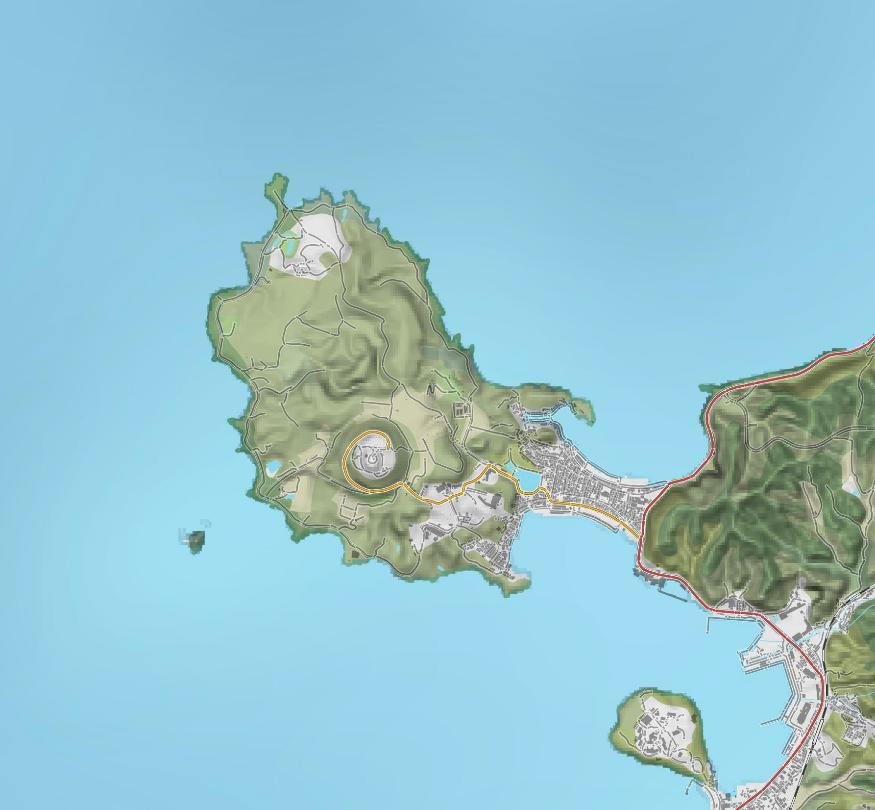
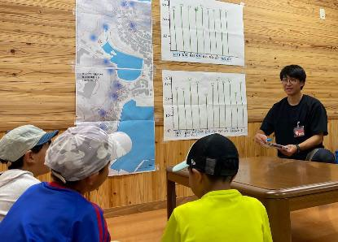
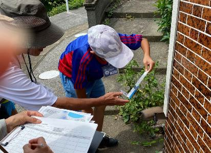
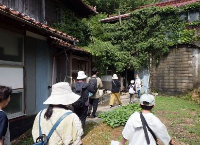
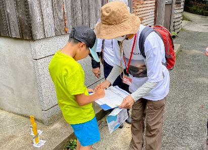
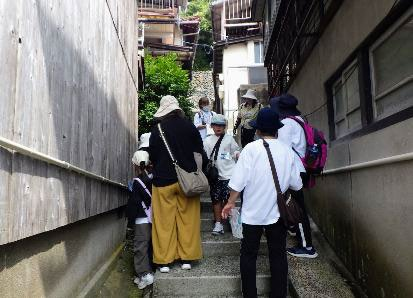
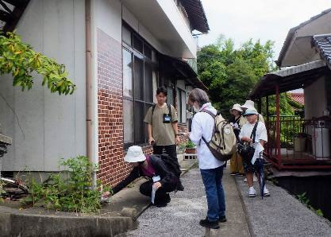
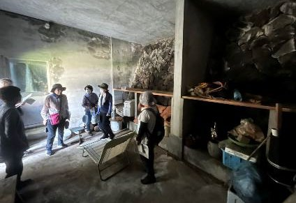
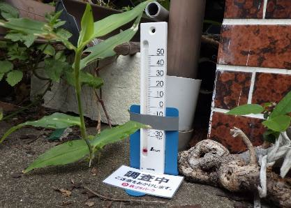

2025年8月9日（日）9:30〜11:30 ／ 越ヶ浜集落・風穴
越ヶ浜集落は、笠山の南東側、ふもとの斜面と平地に広がっています。今回は、笠山に近い斜面側の地区を調査地とし、家と家のあいだの細い路地をたどって調べました。










地元の方から、風穴（ヒヤシ）があると知られている場所を聞き取り、地図に記していきました。観光地として知られる厳島神社の奥の風穴のほかにも、10地点に風穴があることが分かりました。
どの風穴も崖の近くにあり、崖の岩のすき間から冷気がもれ出しているようでした。地図で地形を見ると、やや谷になった場所にあることも分かりました。周辺の家では、ヒヤシを冷蔵庫や冷房のように利用してきたそうです。電気が要らない一方で、湿度が高くカビの問題があり、今はふさいでしまった家も多いようでした。

風穴があると分かった場所を中心に、約10m間隔で路地に温度計を設置しました。明神池の北側の地区に9地点（N-01〜09）、南側の地区に11地点（S-01〜11）の合計20地点です。
ふつう気温は地面から1〜1.5mの高さで測りますが、風穴の冷気は地面の近くの低い位置で感じるため、温度計の高さは地面から約5cmとしました。
測定機器：温度計プチサーモ スクエア（シンワ測定）。測定範囲 -30〜50℃、精度 ±1℃。

| 地区 | 地点 | 温度（℃） | 設置→記録時刻 |
|---|---|---|---|
| 北側 | N-01* | 27.5 | 10:10 → 10:49 |
| N-02 | 30.5 | 10:08 → 10:48 | |
| N-03* | 29.8 | 10:07 → 10:47 | |
| N-04 | 29.8 | 10:06 → 10:46 | |
| N-05 | 32.2 | 10:05 → 10:44 | |
| N-06 | 29.5 | 10:03 → 10:43 | |
| N-07* | 29.5 | 10:02 → 10:42 | |
| N-08 | 30.9 | 10:00 → 10:41 | |
| N-09 | 31.0 | 9:57 → 10:40 | |
| 南側 | S-01* | 26.0 | 9:54 → 11:10 |
| S-02* | 25.0 | 9:54 → 11:00 | |
| S-03 | 33.0 | 9:55 → 11:00 | |
| S-04 | 30.0 | 9:57 → 10:59 | |
| S-05* | 21.0 | 9:59 → 10:58 | |
| S-06 | 29.0 | 10:00 → 10:57 | |
| S-07 | 33.0 | 10:03 → 10:50 | |
| S-08 | 30.0 | 10:03 → 10:51 | |
| S-09 | 32.0 | 10:05 → 10:53 | |
| S-10* | 22.0 | 10:06 → 10:51 | |
| S-11 | 29.5 | 10:07 → 10:52 | |
| その他 | 厳島神社奥 | 15.0 | 11:10 |
| その他 | 山本家倉庫 | 12.8 | 10:42 |
この20地点の温度分布は 笠山・風穴ヒエヒエモニタリング の「影響」層に反映しています。
地元の方から「風向きによって冷え具合が変わる」という話がありました。北側地区であまり温度の差が見られなかったのは、調査日の風向きや風速（南から南東、1.7〜2.9m/s）では冷気がほとんど出ていなかったためだと考えられます。
一方、南側地区では、風穴のある周辺の路地は、無い地点と比べて最小で4.0℃、最大で12.0℃も涼しいことが分かりました。
厳島神社奥の風穴や山本家倉庫の結果から、岩のすき間から出ている冷気そのものは13〜15℃ほど。南側の路地では、この冷気が外の温かい空気とまざることで、21.0〜26.0℃になっていたと考えられます。
この回の成果は、ラボの成果物に反映されています
笠山・風穴ヒエヒエモニタリングを見る ›
笠山のふもとに点在する風穴（ヒヤシ）は、これまで「冷たい場所がある」とは知られていたものの、どれほど温度が下がるのかはよく分かっていませんでした。今回、条件次第で路地の気温が周囲より最大12℃も低くなること、岩のすき間から吹き出す冷気そのものは13〜15℃ほどであることを、数字ではっきりと確かめられました。自然の仕組みそのものが、昔から人びとの暮らしに「天然の冷房」として役立ってきたのです。今後も調査を重ね、天候や風向き、季節で結果がどう変わるかを検証していきます。
今回の成果は、越ヶ浜のまちなかに息づく自然現象を見える化し、地域の風土と生活の知恵をつなぎ直す第一歩です。土地の特性を生かせば、自然のリズムに沿った暮らし方ができる。少し手間はかかるけれど、人にも自然にも無理のない快適さが得られる。そんな理想の姿が浮かび上がってきます。